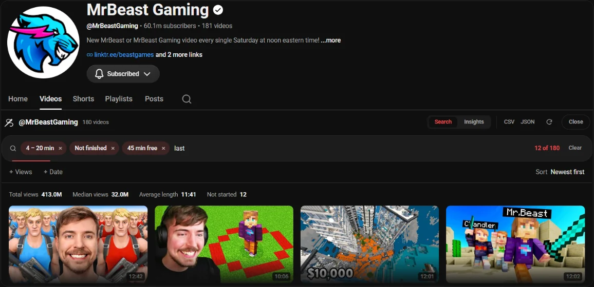

Guide 05·Channels
How to search every video on a YouTube channel.
Updated 30 September 2026
Short answer
Open the channel and click the magnifying glass next to its tabs to search it by keyword. For its most viewed videos, open the Videos tab and pick Popular. YouTube can't filter a channel by length or view count, or hide what you've already watched. Needle, a free Chrome extension, reads every upload on the channel and filters them however you like.
01·On YouTube
Search inside a channel on YouTube
- Open the channel.
- Click the magnifying glass at the end of the tab row, after Home, Videos, Shorts and the rest.
- Type a keyword and press Enter.
You get the channel's videos that match the word, in YouTube's order. No sorting and no filters.
02·Most viewed
Sort a channel by most viewed
On the Videos tab, the chips above the grid switch between Latest, Popular and Oldest. Popular is the closest YouTube gets to a "best of". On a big channel it tends to be a wall of old hits, and you can't combine it with anything else.
03·With Needle
Filter the whole channel with Needle
- Open the channel's Videos tab.
- Press the needle button in the bottom right corner, or Alt+Y.
- Needle reads every upload, not only the ones on screen.
- Filter by Length, Views, Date and Watched, type a keyword, or sort by views, length or date.

What you can do that YouTube can't
- Hide everything you've already finished, or find the ones you gave up on halfway.
- Free time: say you have 45 minutes and see only what fits.
- Exact ranges: under 12 minutes, over a million views, uploaded before 2020.
- Insights: which video lengths do best on this channel, and two channels side by side.
- Export the list as CSV or JSON.
The same filters work from the search bar: @veritasium >1m views <15m is every Veritasium video under 15 minutes with over a million views. Turn on Index channels you watch in the popup and in:channels searches the full catalogues of the channels you actually watch.
04·Questions
Questions?
How many videos can it read?
The whole channel, up to the Video limit in the popup, which you can raise for very large channels. A few hundred videos take a few seconds, and after that the channel is cached and opens instantly.
Does it include Shorts?
Shorts are kept out of the main list, since YouTube doesn't give them a length or upload date to filter on.
Does it use the YouTube API?
No. It reads the same pages your browser already loads from youtube.com, so there's no API key and no quota to run out of.
Is it free?
Yes. No account, no trial, no paid tier.